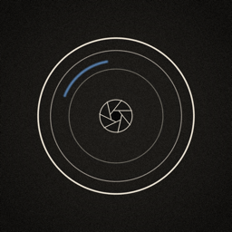

IRISTe han invitado a IRIS
IRIS es una app para preparar la fotografía de un rodaje: plantas de cámara y de luz, storyboard, jornadas y documentos para el equipo.
1
Descarga IRIS
Descargar para Mac
Si el Mac dice que no puede abrirla
- Abre el archivo descargado y arrastra IRIS a Aplicaciones.
- Ábrela. Si sale un aviso, ciérralo.
- Ve a Ajustes del Sistema › Privacidad y seguridad y pulsa «Abrir igualmente» junto a IRIS.
Pasa porque IRIS aún no está en la App Store; solo hay que hacerlo la primera vez.
Descargar para Windows
Si Windows avisa al instalar
- Pulsa «Más información».
- Pulsa «Ejecutar de todas formas».
Pasa porque IRIS aún no está en una tienda de apps; solo la primera vez.
IRIS para iPhone y iPad llegará pronto. De momento funciona en Mac y en Windows: abre este enlace en tu ordenador.
2
Crea tu cuenta
Abre IRIS y pulsa «Iniciar sesión». Si aún no tienes cuenta, créala con tu correo.
3
Escribe el código
Si IRIS te pide un código de invitación, es este:
—